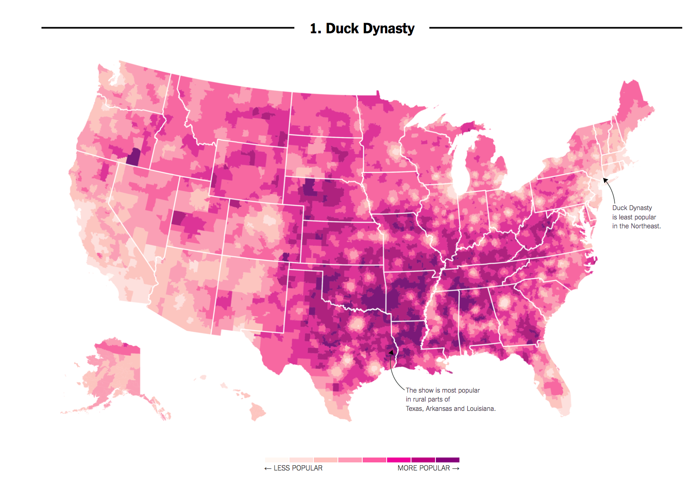

3.1 What separates causation from correlation?
Here’s an example. In 2016, researchers at the NY Times noticed that areas in the country where the television show Duck Dynasty was popular also tended to support Donald Trump at higher rates.

If we put our social scientist hat on, we might want to distinguish whether this is a causal or, more likely, just a correlational relationship:
- Correlation: Areas that watch Duck Dynasty are more likely to support Trump (degree to which two variables “move together”)
- Causality: Watching Duck Dynasty (vs. not watching) increases your support of Trump.
Causal Question: Does the manipulation of one factor (the treatment), (holding everything else constant), cause a change in an outcome?
3.1.1 Potential Outcomes Framework
When studying causal relationships, we distinguish two concepts:
- treatment: variable whose change may produce a change in the outcome
- outcome (\(Y\)): what may change as a result
We imagine two states of the world or “potential outcomes.”
- \(Y(1)\): the outcome if the treatment is administered
- \(Y(0)\): the outcome if the treatment is NOT administered (or maybe something else is)
Example: How does voter turnout (\(Y\)) change as a result of varying whether someone receives a mail-in ballot (the treatment)?
- \(Y(\text{sent a mail-in ballot})\): do you vote or not
- \(Y(\text{not sent a mail-in ballot})\): do you vote or not
We compare your likelihood of turning out to vote in a world where you did receive a mail-in ballot vs. a counterfactual state of the world in which you did not receive a mail-in ballot, generally assuming that this is the only thing that is different between these two potential states of the world.
In many cases in social science, we might start by observing some connection in the real world (a factual observation). To make a causal claim, we then have to imagine what that counterfactual state of the world would be. Examples:
- Causal Question: Does the minimum wage increase the unemployment rate?
- (Hypothetical) Factual: An unemployment rate went up after the minimum wage increased
- Implied Counterfactual: Would the unemployment rate have gone up, had the minimum wage increase not occurred?
- Causal Question: Does race affect one’s job prospects?
- (Hypothetical) Factual: Jamal applied for a job but did not get it
- Implied Counterfactual: Would Jamal have gotten a job if he were white?
We use causal logic all of the time outside of social science.
For example, many viewers get angry after watching the movie Titanic because they believe Jack did not have to die. We can place their claims in our causal framework:
- Outcome: Jack Surviving the Titanic
- Potential Outcomes in two states of the world
- Rose did not share the floating door, and Jack died.
- Counterfactual question: If Rose had shared the floating door, would Jack have lived?
In Bit by Bit, Matt Salganik notes that sometimes cause-and-effect questions are implicit. For example, in more general questions about maximization of some performance metric, we might want to compare several alternatives:
The question “What color should the donate button be on an NGO’s website?” is really lots of questions about the effect of different button colors on donations.
- Factual: A voter donates some amount with a black button
- Counterfactual: What would a voter donate if the button were blue?
- Counterfactual: What would a voter donate if the button were red?
What other causal questions might social scientists or data scientists ask?
3.1.2 Causal Effects
When we are conducting a causal analysis, we will want to estimate a causal effect.
A causal effect is the change in the outcome Y that is caused by a change in the treatment variable.
- \(Y(1) - Y(0)\) = causal effect or “treatment effect”
- e.g., Donation if contacted - Donation if not contacted
We often want to know the average treatment effect in some population, not just the causal effect for a single individual. Here, we might ask, on average, how much would our outcome change if our units were treated instead of untreated. To do so, we simply sum up all of the causal effects and divide them by the number of units in our population.
- \(\frac{1}{N} \sum_{i=1}^N (Y_i (1)-Y_i (0))\) = “average treatment effect” (ATE)
- e.g., Average donations if contacted - Average donations if not contacted
3.1.3 Fundamental Problem of Causal Inference
The problem: Fundamental Problem of Causal Inference
What makes the evaluation of causal claims difficult, is that in the real world, we suffer from the fundamental problem of causal inference:
- For any individual, we only get to see (observe) the result from one state of the world
- This makes that subtraction of potential outcomes impossible.
(Unless we are in Groundhog Day or Russian Doll)